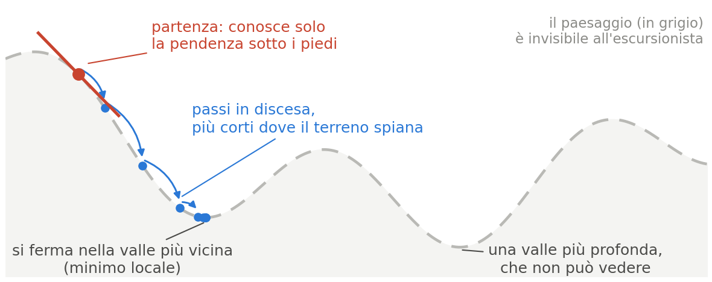
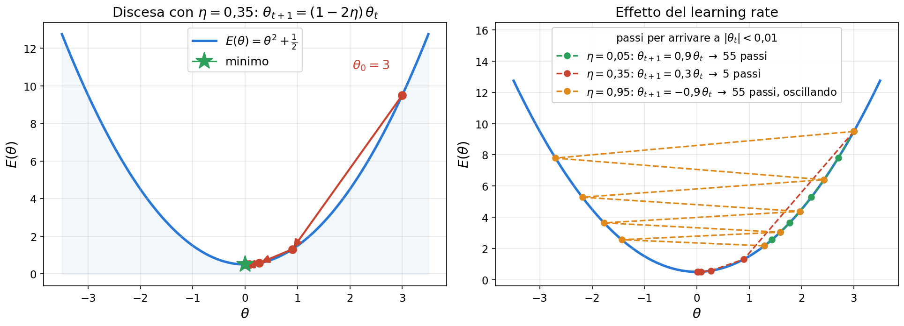
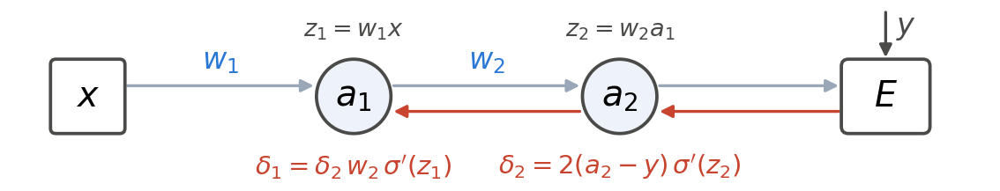
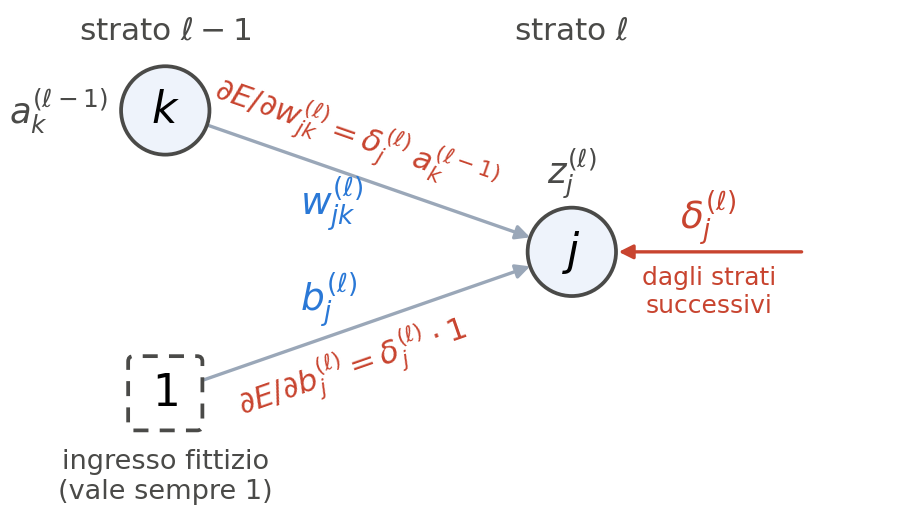
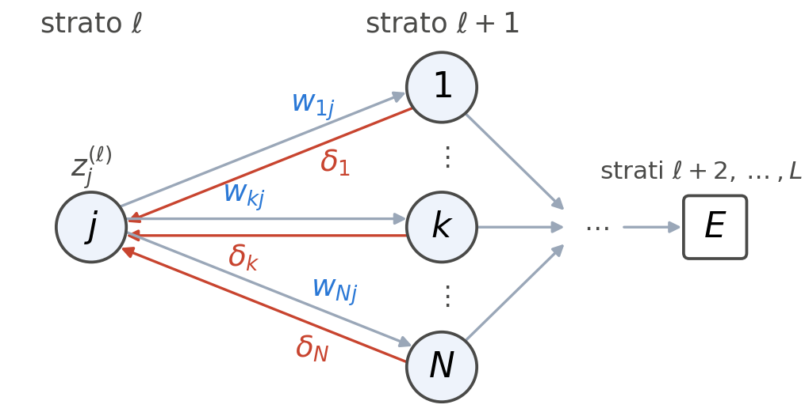
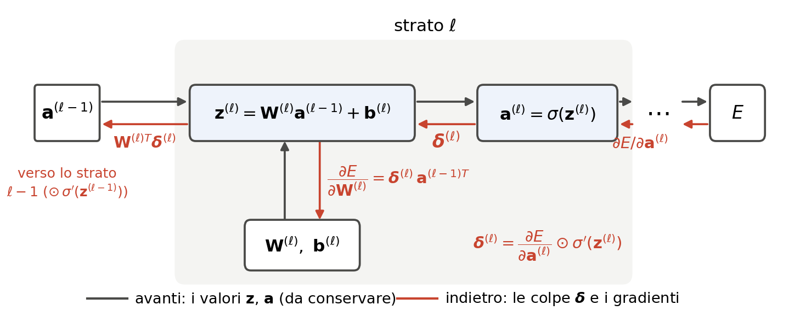

Programmazione Scientifica++: Lezione 3
Deep Learning — Loss, Discesa del Gradiente e Backpropagation
Argomenti di oggi
- La funzione costo (MSE)
- La discesa del gradiente
- Backpropagation: la regola della catena, i \(\boldsymbol{\delta}\) e le due formule
- Esercizio: la backpropagation a mano
Minimizzare l’errore: la funzione costo
Addestrare una rete neurale significa risolvere un problema di minimizzazione.
Perché la rete impari serve una misura quantitativa di quanto sbaglia. La funzione che calcola la “distanza” fra la risposta della rete e la risposta attesa (il target) si chiama funzione costo (loss function).
Esistono molte loss (per esempio la cross-entropy, per la classificazione); la più semplice è la MSE.
L’errore quadratico medio (MSE)
L’errore quadratico medio (Mean Squared Error) calcola la differenza fra il valore atteso (\(y\)) e la predizione della rete (\(a\)), la eleva al quadrato (così il segno non conta e gli errori grandi pesano di più) e ne fa la media sulle \(n\) uscite:
\[ E = \frac{1}{n} \sum_{i=1}^{n} \left(y_i - a_i\right)^2 \]
Il risultato \(E\) è un numero (per esempio \(E = 12{,}4\)): nullo se la rete riproduce esattamente i target, tanto più grande quanto più se ne discosta.
L’obiettivo matematico
Il nostro obiettivo diventa: trovare i pesi \(\mathbf{W}^{(\ell)}\) e i bias \(\mathbf{b}^{(\ell)}\) che rendono \(E\) il più piccolo possibile. (Non zero: una rete che azzera l’errore sui dati di addestramento di solito ha solo imparato a memoria — ne riparleremo col test set.)
Una rete con 100 strati può avere \(10^7\) parametri fra pesi e bias, e \[ E = E\!\left(\mathbf{W}^{(1)}, \dots, \mathbf{W}^{(100)},\ \mathbf{b}^{(1)}, \dots, \mathbf{b}^{(100)}\right) \] è una superficie in uno spazio a dieci milioni di dimensioni.
Come se ne trova un minimo?
L’escursionista bendato
Immaginate di essere bendati in cima a una catena montuosa e di voler scendere a valle. L’unica informazione disponibile è la pendenza del terreno sotto i piedi: la tastate, individuate la direzione in cui scende di più e fate un piccolo passo. Ripetendo il procedimento migliaia di volte si arriva in fondo a una valle: è la discesa del gradiente (gradient descent).

La discesa del gradiente
Raccogliamo tutti i parametri della rete in un unico vettore \[ \boldsymbol{\theta} = \left(\mathbf{W}^{(1)}, \dots, \mathbf{W}^{(L)},\ \mathbf{b}^{(1)}, \dots, \mathbf{b}^{(L)}\right) \in \mathbb{R}^{P}, \] con \(P\) il numero totale di pesi e bias. A dati fissati la loss è una funzione \(E: \mathbb{R}^P \to \mathbb{R}\), e la discesa del gradiente è l’iterazione \[ \boldsymbol{\theta}_{t+1} = \boldsymbol{\theta}_t - \eta\, \nabla_{\boldsymbol{\theta}} E(\boldsymbol{\theta}_t) , \] cioè, blocco per blocco, \(\mathbf{W}^{(\ell)} \leftarrow \mathbf{W}^{(\ell)} - \eta\, \partial E/\partial \mathbf{W}^{(\ell)}\) e \(\mathbf{b}^{(\ell)} \leftarrow \mathbf{b}^{(\ell)} - \eta\, \partial E/\partial \mathbf{b}^{(\ell)}\) per ogni \(\ell\), con tutti i gradienti calcolati nello stesso punto \(\boldsymbol{\theta}_t\). Qui \(\partial E/\partial \mathbf{W}^{(\ell)}\) è la matrice che in posizione \((j,k)\) ha la derivata \(\partial E/\partial w^{(\ell)}_{jk}\), e \(\partial E/\partial \mathbf{b}^{(\ell)}\) il vettore che in posizione \(j\) ha \(\partial E/\partial b^{(\ell)}_j\): hanno le stesse dimensioni di \(\mathbf{W}^{(\ell)}\) e di \(\mathbf{b}^{(\ell)}\), e l’aggiornamento sottrae elemento per elemento.
La direzione di discesa più rapida
Per uno spostamento piccolo \(\Delta\boldsymbol{\theta}\), al primo ordine \[ E(\boldsymbol{\theta} + \Delta\boldsymbol{\theta}) \simeq E(\boldsymbol{\theta}) + \nabla E \cdot \Delta\boldsymbol{\theta} . \] Fra gli spostamenti di lunghezza fissata, \(\lVert \Delta\boldsymbol{\theta} \rVert = \varepsilon\), la disuguaglianza di Cauchy–Schwarz \(\lvert \nabla E \cdot \Delta\boldsymbol{\theta} \rvert \le \lVert \nabla E \rVert\, \lVert \Delta\boldsymbol{\theta} \rVert\) dà \[ -\varepsilon \lVert \nabla E \rVert \;\le\; \nabla E \cdot \Delta\boldsymbol{\theta} \;\le\; \varepsilon \lVert \nabla E \rVert , \] e il minimo si raggiunge solo per \(\Delta\boldsymbol{\theta}\) antiparallelo al gradiente, \(\Delta\boldsymbol{\theta} = -\varepsilon\, \nabla E / \lVert \nabla E \rVert\): è la direzione di discesa più rapida. Il passo \(\Delta\boldsymbol{\theta} = -\eta \nabla E\) è proprio questo, con \(\varepsilon = \eta \lVert \nabla E \rVert\), che si accorcia da solo vicino al minimo, dove il gradiente è piccolo. Finché \(\varepsilon\) resta piccolo, \(E(\boldsymbol{\theta} - \eta \nabla E) \simeq E(\boldsymbol{\theta}) - \eta \lVert \nabla E \rVert^2 \le E(\boldsymbol{\theta})\).
\(\eta\) è il learning rate: troppo grande, il primo ordine non basta più e la discesa può divergere (quesito 1); troppo piccolo, la convergenza è lentissima.
La discesa del gradiente: visualizzazione

Per riprodurla: \(E(\theta) = \theta^2 + \tfrac12\), partenza \(\theta_0 = 3\), passo \(\theta_{t+1} = \theta_t - \eta\, E'(\theta_t) = (1 - 2\eta)\,\theta_t\). Per quali \(\eta\) converge? È il quesito 1.
Il gradiente negli strati interni
Calcolare \(\partial E/\partial \mathbf{W}^{(L)}\) e \(\partial E/\partial \mathbf{b}^{(L)}\) per l’ultimo strato è facile: fra quei parametri ed \(E\) c’è un solo strato. Ma da un parametro del primo strato, per esempio il peso \(w^{(1)}_{57,\,432}\) (quello con cui il neurone nascosto 57 legge il pixel 432) o il bias \(b^{(1)}_{57}\), \(E\) dipende solo attraverso tutti gli strati successivi. La rete è una funzione composta:
\[ E = \Big\lVert\, \mathbf{f}_L\big(\cdots \mathbf{f}_2(\mathbf{f}_1(\mathbf{x}))\cdots\big) - \mathbf{y} \,\Big\rVert^2, \qquad \mathbf{f}_\ell(\mathbf{a}) = \sigma\!\left(\mathbf{W}^{(\ell)}\mathbf{a} + \mathbf{b}^{(\ell)}\right) , \]
e \(\mathbf{W}^{(1)}\) e \(\mathbf{b}^{(1)}\) stanno nella funzione più interna. Le loro derivate si calcolano con la regola della catena (la derivata della funzione composta), attraversando tutti gli strati: uno in una rete a due strati, cento in una rete di cento.
Il piano
Calcolando i gradienti vedremo che dipendono tutti da una sola quantità per neurone, il segnale d’errore \(\delta\), e che il \(\delta\) di uno strato si calcola ricorsivamente da quello dello strato successivo. Partendo dall’uscita e procedendo all’indietro si ottengono tutti i gradienti: è la backpropagation.
Due strati, un neurone ciascuno

Con \(E = (a_2 - y)^2\) e la regola della catena, con \(\sigma'(z_i) = (d\sigma/dz)\big|_{z = z_i}\):
\[ \frac{\partial E}{\partial w_2} = \underbrace{2(a_2 - y)\,\sigma'(z_2)}_{\delta_2}\; a_1 , \qquad \frac{\partial E}{\partial w_1} = \underbrace{\underbrace{2(a_2 - y)\,\sigma'(z_2)}_{\delta_2}\; w_2\,\sigma'(z_1)}_{\delta_1}\; x . \]
Ogni strato attraversato aggiunge un fattore \(w\,\sigma'\) (con cento strati, cento fattori), e i fattori comuni sono i \(\delta\): calcolarli una volta sola, dall’uscita verso l’ingresso, è la backpropagation.
Notazione: tre vettori per ogni strato
Numeriamo gli strati \(\ell = 1, \dots, L\) e chiamiamo \(\mathbf{a}^{(0)} = \mathbf{x}\) l’ingresso. (Nella Lezione 2 lo strato generico si chiamava \(L\); qui serve un nome anche per l’ultimo: \(\ell\) è lo strato generico, \(L\) l’ultimo.) Ogni strato produce due vettori:
\[ \mathbf{z}^{(\ell)} = \mathbf{W}^{(\ell)}\mathbf{a}^{(\ell-1)} + \mathbf{b}^{(\ell)}, \qquad \mathbf{a}^{(\ell)} = \sigma\!\left(\mathbf{z}^{(\ell)}\right) \]
\(\mathbf{z}\) è la pre-attivazione, \(\mathbf{a}\) l’attivazione; per componenti, con la convenzione della Lezione 2 (\(j\) = arrivo, \(k\) = ingresso), \(z^{(\ell)}_j = \sum_k w^{(\ell)}_{jk}\, a^{(\ell-1)}_k + b^{(\ell)}_j\).
\(\sigma\) è la sigmoide del framework: con un’altra attivazione \(f\) si sostituisce \(\sigma'\) con \(f'\). Nel framework, inoltre, \(\mathbf{b} = 0\): le formule che seguono valgono togliendolo.
Il segnale d’errore \(\boldsymbol{\delta}\)
Il terzo vettore di ogni strato è la definizione su cui poggia tutto:
\[ \delta^{(\ell)}_j \;\equiv\; \frac{\partial E}{\partial z^{(\ell)}_j} \]
cioè quanto cambia l’errore se sposto di poco la pre-attivazione del neurone \(j\), ed è il segnale d’errore del neurone. La backpropagation ricava tutti i gradienti dai \(\boldsymbol{\delta}^{(\ell)}\) e calcola i \(\boldsymbol{\delta}\) a ritroso, uno strato alla volta. Le dipendenze di \(E\) dai parametri dello strato \(\ell\) sono la funzione composta vista prima, scritta strato per strato:
\(E\) 2\(\longleftarrow\) \(\mathbf{z}^{(L)}\) \(\longleftarrow \cdots \longleftarrow\) \(\mathbf{z}^{(\ell+1)}\) 3\(\longleftarrow\) \(\mathbf{z}^{(\ell)}\) 1\(\longleftarrow\) \(\big(\mathbf{W}^{(\ell)}, \mathbf{b}^{(\ell)}\big)\)
1 dai parametri a \(\mathbf{z}^{(\ell)}\): i gradienti \(\partial E/\partial \mathbf{W}^{(\ell)}\) e \(\partial E/\partial \mathbf{b}^{(\ell)}\) si scrivono con i \(\boldsymbol{\delta}\);
2 verso \(E\): \(\boldsymbol{\delta}^{(L)} = \partial E/\partial \mathbf{a}^{(L)} \odot \sigma'(\mathbf{z}^{(L)})\), con \(\partial E/\partial \mathbf{a}^{(L)}\) dalla loss;
3 tra due strati: \(\boldsymbol{\delta}^{(\ell)} = \partial E/\partial \mathbf{a}^{(\ell)} \odot \sigma'(\mathbf{z}^{(\ell)})\), con \(\partial E/\partial \mathbf{a}^{(\ell)}\) da \(\boldsymbol{\delta}^{(\ell+1)}\).
Passo 1: i gradienti
\(E\) dipende da \(w^{(\ell)}_{jk}\) e \(b^{(\ell)}_j\) solo attraverso \(z^{(\ell)}_j\), l’unica in cui compaiono:
\[ \begin{aligned} \frac{\partial E}{\partial w^{(\ell)}_{jk}} &= \frac{\partial E}{\partial z^{(\ell)}_j}\,\frac{\partial z^{(\ell)}_j}{\partial w^{(\ell)}_{jk}} = \delta^{(\ell)}_j\, a^{(\ell-1)}_k , \\ \frac{\partial E}{\partial b^{(\ell)}_j} &= \frac{\partial E}{\partial z^{(\ell)}_j}\,\frac{\partial z^{(\ell)}_j}{\partial b^{(\ell)}_j} = \delta^{(\ell)}_j , \end{aligned} \]
perché in \(z^{(\ell)}_j = \sum_m w^{(\ell)}_{jm} a^{(\ell-1)}_m + b^{(\ell)}_j \cdot 1\), derivando rispetto a \(w_{jk}\) conta solo il termine \(m = k\), e \(b_j\) moltiplica \(1\).

Il gradiente di un peso è il segnale che entra nella freccia per il segnale d’errore che arriva alla punta. Il bias è il peso di un ingresso fittizio che vale sempre 1.
Passo 1: la forma matriciale
Per tutti i pesi dello strato insieme, la formula per componenti è un prodotto colonna per riga:
\[ \frac{\partial E}{\partial \mathbf{W}^{(\ell)}} = \boldsymbol{\delta}^{(\ell)} \left(\mathbf{a}^{(\ell-1)}\right)^{T}, \qquad \frac{\partial E}{\partial \mathbf{b}^{(\ell)}} = \boldsymbol{\delta}^{(\ell)} . \]
Le dimensioni tornano: \(\boldsymbol{\delta}^{(\ell)}\) è \(N_\ell \times 1\) e \(\left(\mathbf{a}^{(\ell-1)}\right)^T\) è \(1 \times N_{\ell-1}\), quindi il prodotto è \(N_\ell \times N_{\ell-1}\), la forma di \(\mathbf{W}^{(\ell)}\). Se l’ingresso è nullo, \(a_k = 0\), il suo peso resta invariato.
Passo 2: l’ultimo strato
All’uscita \(E\) dipende da \(z^{(L)}_j\) solo attraverso \(a^{(L)}_j = \sigma(z^{(L)}_j)\):
\[ \delta^{(L)}_j = \frac{\partial E}{\partial a^{(L)}_j}\,\sigma'\!\left(z^{(L)}_j\right) \qquad\Longrightarrow\qquad \boldsymbol{\delta}^{(L)} = \nabla_{\mathbf{a}} E \odot \sigma'\!\left(\mathbf{z}^{(L)}\right) \]
dove \(\odot\) è il prodotto componente per componente. Con la MSE, \(E = \sum_j (a^{(L)}_j - y_j)^2\), il primo fattore è \(2\,(\mathbf{a}^{(L)} - \mathbf{y})\): l’errore, con il segno che dice in che verso correggere.
È l’unico punto in cui la loss entra nel calcolo: da qui in giù la backpropagation non sa quale loss stiamo usando. Per questo nel framework la loss è una classe separata, il cui backward restituisce proprio \(\nabla_{\mathbf{a}} E\).
Nota
Il framework omette il fattore \(1/n\) della MSE: una costante moltiplica tutto il gradiente e si riassorbe in \(\eta\).
Passo 3: la regola della catena
\(E\) dipende dalla pre-attivazione \(z^{(\ell)}_j\) del neurone \(j\) dello strato \(\ell\) solo attraverso lo strato successivo: l’uscita di \(j\) entra nelle pre-attivazioni \(z^{(\ell+1)}_k\) di tutti i neuroni dello strato \(\ell+1\), \(k = 1, \dots, N_{\ell+1}\) (nella figura fino a \(N\)).

Regola della catena con una somma su \(k\), un termine per ogni cammino:
\[ \delta^{(\ell)}_j = \sum_k \frac{\partial E}{\partial z^{(\ell+1)}_k}\,\frac{\partial z^{(\ell+1)}_k}{\partial z^{(\ell)}_j} = \sum_k \delta^{(\ell+1)}_k\,\frac{\partial z^{(\ell+1)}_k}{\partial z^{(\ell)}_j} . \]
Passo 3: la ricorsione
Resta il fattore \(\partial z^{(\ell+1)}_k / \partial z^{(\ell)}_j\), sulla freccia da \(j\) a \(k\). In \(z^{(\ell+1)}_k = \sum_m w^{(\ell+1)}_{km}\,\sigma(z^{(\ell)}_m) + b^{(\ell+1)}_k\) conta solo il termine \(m = j\):
\[ \frac{\partial z^{(\ell+1)}_k}{\partial z^{(\ell)}_j} = w^{(\ell+1)}_{kj}\,\sigma'\!\left(z^{(\ell)}_j\right) \qquad\Longrightarrow\qquad \delta^{(\ell)}_j = \underbrace{\sum_k w^{(\ell+1)}_{kj}\,\delta^{(\ell+1)}_k}_{\partial E/\partial a^{(\ell)}_j}\;\sigma'\!\left(z^{(\ell)}_j\right) . \]
È la figura letta da destra a sinistra: le frecce rosse portano a \(j\) i \(\delta_k\) di tutti i neuroni dello strato successivo, ciascuno pesato con il suo \(w_{kj}\), e il neurone \(j\) aggiunge \(\sigma'(z^{(\ell)}_j)\). La somma è \(\partial E/\partial a^{(\ell)}_j\): anche \(a^{(\ell)}_j\) raggiunge \(E\) solo attraverso le \(z^{(\ell+1)}_k\), quindi \(\partial E/\partial a^{(\ell)}_j = \sum_k \big(\partial z^{(\ell+1)}_k/\partial a^{(\ell)}_j\big)\big(\partial E/\partial z^{(\ell+1)}_k\big) = \sum_k w^{(\ell+1)}_{kj}\,\delta^{(\ell+1)}_k\). Ed è la forma del passo 2, valida per ogni strato: \(\partial E/\partial a^{(\ell)}_j\) arriva dalla loss (\(\ell = L\)) o dallo strato successivo.
Passo 3: la trasposta
Nella somma \(\sum_k w^{(\ell+1)}_{kj}\,\delta^{(\ell+1)}_k\) l’indice sommato è il primo di \(w\), quello del neurone d’arrivo. Sommare sul primo indice è moltiplicare per la trasposta: \(\big(\mathbf{W}^{T}\boldsymbol{\delta}\big)_j = \sum_k w_{kj}\,\delta_k\). In forma vettoriale:
\[ \boxed{\;\boldsymbol{\delta}^{(\ell)} = \left(\left(\mathbf{W}^{(\ell+1)}\right)^{T}\boldsymbol{\delta}^{(\ell+1)}\right) \odot \sigma'\!\left(\mathbf{z}^{(\ell)}\right)\;} \]
La trasposta è il risultato esatto della regola della catena, per qualunque \(\mathbf{W}\): costa quanto il prodotto in avanti e riporta i segnali d’errore dei neuroni d’arrivo al neurone di partenza, con gli stessi pesi dell’andata. Non è un’inversa approssimata: una \(\mathbf{W}\) non quadrata (\(784 \to 200\)) ha solo la pseudo-inversa \(\mathbf{W}^{+} = \mathbf{W}^T(\mathbf{W}\mathbf{W}^T)^{-1}\), e nel Lab 16 (back query) vedremo che si riduce alla trasposta, a meno di un fattore, solo se \(\mathbf{W}\mathbf{W}^T \approx c\,\mathbf{I}\): lì è un’approssimazione che dipende dai pesi.
Il grafo di calcolo: riepilogo

Da destra a sinistra, nell’ordine del calcolo. Da destra arriva \(\partial E/\partial \mathbf{a}^{(\ell)}\): per l’ultimo strato viene dalla loss, \(\nabla_{\mathbf{a}}E\) (2); per gli altri è la freccia 3 uscita dallo strato successivo. Moltiplicata per \(\sigma'(\mathbf{z}^{(\ell)})\) dà \(\boldsymbol{\delta}^{(\ell)}\), da cui i gradienti di pesi e bias (1). Infine 3 \(\mathbf{W}^{(\ell)T}\boldsymbol{\delta}^{(\ell)}\) esce a sinistra: è la freccia che arriva da destra allo strato precedente.
In sintesi
Per aggiornare la rete servono i gradienti. Ciascuno si scrive con il \(\boldsymbol{\delta}\) del proprio strato (1). I \(\boldsymbol{\delta}\) si calcolano a ritroso, ciascuno da quello dello strato successivo (3), partendo dall’ultimo, che si calcola direttamente dalla loss (2).
L’algoritmo completo
- Forward: calcola e conserva \(\mathbf{z}^{(\ell)}\) e \(\mathbf{a}^{(\ell)}\), per \(\ell = 1 \dots L\).
- Ultimo strato: \(\;\boldsymbol{\delta}^{(L)} = \nabla_{\mathbf{a}}E \odot \sigma'(\mathbf{z}^{(L)})\).
- Backward, per \(\ell = L, \dots, 1\): il gradiente dello strato, poi il segnale d’errore per quello prima:
\[ \begin{aligned} \partial E/\partial\mathbf{W}^{(\ell)} &= \boldsymbol{\delta}^{(\ell)}\left(\mathbf{a}^{(\ell-1)}\right)^T, \qquad \partial E/\partial\mathbf{b}^{(\ell)} = \boldsymbol{\delta}^{(\ell)} \\ \boldsymbol{\delta}^{(\ell-1)} &= \big((\mathbf{W}^{(\ell)})^T\boldsymbol{\delta}^{(\ell)}\big)\odot\sigma'\!\left(\mathbf{z}^{(\ell-1)}\right) \qquad (\ell > 1) \end{aligned} \]
- Aggiornamento: \(\;\mathbf{W}^{(\ell)} \leftarrow \mathbf{W}^{(\ell)} - \eta\,\partial E/\partial\mathbf{W}^{(\ell)}\) (e così \(\mathbf{b}^{(\ell)}\)), per ogni \(\ell\).
Costo: \(\mathbf{W}^T\boldsymbol{\delta}\) e \(\boldsymbol{\delta}\,\mathbf{a}^T\) sono di ordine \(N_\ell N_{\ell-1}\), come il forward. Perturbando un peso alla volta servirebbe un forward per ogni peso.
La differenza con il libro di Rashid
Nel libro di Rashid il passo 3 è semplificato: per riportare l’errore dallo strato di uscita (2) a quello nascosto (1) usa l’errore grezzo \(\mathbf{e} = \mathbf{y} - \mathbf{a}^{(2)}\),
\[ \begin{aligned} \text{libro:}\quad & -\left(\mathbf{W}^{(2)T}\,\mathbf{e}\right)\odot\sigma'\!\left(\mathbf{z}^{(1)}\right) \\[2pt] \text{esatto:}\quad & -2\left(\mathbf{W}^{(2)T}\big[\,\mathbf{e}\odot\sigma'\!\left(\mathbf{z}^{(2)}\right)\big]\right)\odot\sigma'\!\left(\mathbf{z}^{(1)}\right) = \boldsymbol{\delta}^{(1)} \end{aligned} \]
Il segno è lo stesso, ed è per questo che la rete del libro scende; il fattore \(2\) si riassorbe in \(\eta\). Manca invece \(\sigma'(\mathbf{z}^{(2)})\), cioè il passaggio da \(\mathbf{e}\) a \(\boldsymbol{\delta}^{(2)} = -2\,\mathbf{e}\odot\sigma'\): quello che scende non è il gradiente di \(E\). Nel Lab 13 lo misurerete. A rete appena inizializzata tutte le uscite sono vicine a \(0{,}5\) e \(\sigma' \approx 1/4\) per tutte: il fattore omesso è quasi uno scalare, e il gradiente del libro ha quasi la stessa direzione (coseno \(0{,}9997\)) con norma quattro volte più grande. Durante l’addestramento però \(\sigma'\) diventa diverso da un’uscita all’altra: la direzione ruota (coseno \(0{,}16\) all’epoca 120) e il passo cresce di due ordini di grandezza.
Esercizio in classe: backprop a mano
Dieci minuti, con carta, penna e il telefono per l’esponenziale. Una catena di due neuroni sigmoidi, senza bias:
\[ x \;\to\; z_1 = w_1 x \;\to\; a_1 = \sigma(z_1) \;\to\; z_2 = w_2 a_1 \;\to\; a_2 = \sigma(z_2), \qquad E = (a_2 - y)^2 \]
con \(x = 1\), \(w_1 = w_2 = 1\), \(y = 1\). Ricordate che \(\sigma' = \sigma(1-\sigma)\).
- Forward: \(z_1, a_1, z_2, a_2\) ed \(E\).
- Backward: \(\delta_2 = 2(a_2 - y)\,\sigma'(z_2)\) e \(\delta_1 = w_2\,\delta_2\,\sigma'(z_1)\); poi \(\partial E/\partial w_2 = \delta_2\, a_1\) e \(\partial E/\partial w_1 = \delta_1\, x\).
- Verifica: \(\big[E(w_1 = 1{,}01) - E(w_1 = 0{,}99)\big]/0{,}02\) deve tornare con \(\partial E/\partial w_1\).
Quanto è più piccolo \(\delta_1\) di \(\delta_2\), e perché?
Esercizio: soluzione
| strato 1 | strato 2 | |
|---|---|---|
| \(z\) | \(1\) | \(0{,}7311\) |
| \(a = \sigma(z)\) | \(0{,}7311\) | \(0{,}6750\) |
| \(\sigma'(z)\) | \(0{,}1966\) | \(0{,}2194\) |
| \(\delta\) | \(-0{,}0280\) | \(-0{,}1426\) |
| \(\partial E/\partial w\) | \(-0{,}0280\) | \(-0{,}1042\) |
\(E = (0{,}6750 - 1)^2 = 0{,}1056\). Verifica: \(E(1{,}01) = 0{,}105321\), \(E(0{,}99) = 0{,}105882\), e \((0{,}105321 - 0{,}105882)/0{,}02 = -0{,}0280\): torna. È il gradient check che farete nel Lab 13.
\(\delta_1\) è circa cinque volte più piccolo di \(\delta_2\): da uno strato all’altro il segnale d’errore si moltiplica per \(w_2\,\sigma'(z_1) \approx 0{,}2\) (con dieci strati, dieci fattori così: quesito 2). I gradienti negativi dicono di aumentare i pesi, e infatti \(a_2 < y\).
Quesiti finali
1. Un passo troppo lungo. Loss \(E(x) = x^2\), partenza \(x_0 = 1\), learning rate \(\eta = 1\). Dove siete dopo un passo? E dopo due? Per quali \(\eta\) il metodo converge, e qual è il valore che centra il minimo in un solo passo?
2. (aperta) Il tetto della sigmoide. La derivata della sigmoide è \(\sigma' = \sigma(1-\sigma)\). Qual è il suo valore massimo? La backpropagation moltiplica questo fattore una volta per strato: cosa arriva al primo strato di una rete di dieci? E allora come si addestrano le reti con decine di strati usate oggi?
Quesiti finali: le risposte
1. \(E'(x) = 2x\), quindi il passo è \(x \leftarrow x - \eta\,2x = (1 - 2\eta)\,x\). Con \(\eta = 1\) il fattore vale \(-1\): \(x_1 = -1\), \(x_2 = +1\), e così via: \(x\) oscilla fra i due valori e la loss non diminuisce. Si converge per \(|1 - 2\eta| < 1\), cioè \(0 < \eta < 1\); e \(\eta = 0{,}5\) annulla il fattore e centra il minimo al primo passo. Un learning rate grande non è “la stessa discesa, più veloce”: è un metodo diverso, che può non convergere affatto.
2. Traccia: \(\sigma(1-\sigma)\) è massima per \(z = 0\), dove \(\sigma = 1/2\): il massimo è \(\tfrac12\cdot\tfrac12 = 0{,}25\). Dieci strati la moltiplicano dieci volte: \(0{,}25^{10} \approx 10^{-6}\), ed è il caso migliore per \(\sigma'\), con pesi di ordine uno. Il primo strato riceve un gradiente un milione di volte più piccolo dell’ultimo e di fatto non impara: è il vanishing gradient, già incontrato nella Lezione 02. Le reti profonde di oggi lo aggirano cambiando i tre ingredienti che qui diamo per scontati: la funzione di attivazione (ReLU, Lezione 02), l’inizializzazione dei pesi (He e Xavier, Laboratorio 08) e il percorso che l’errore fa per tornare indietro.